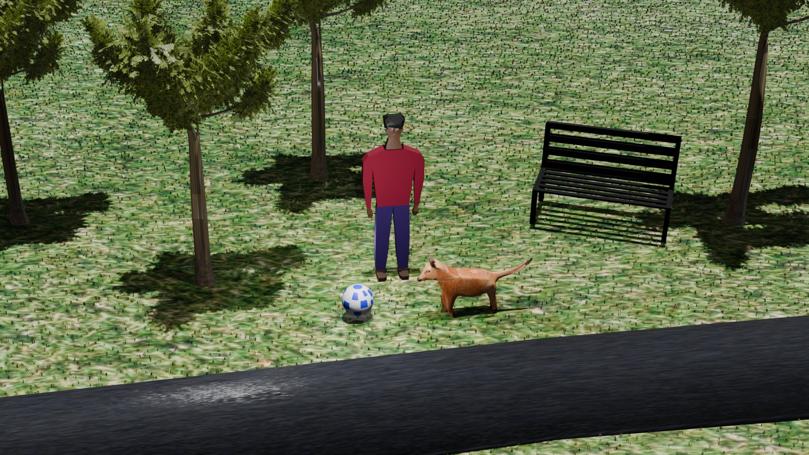
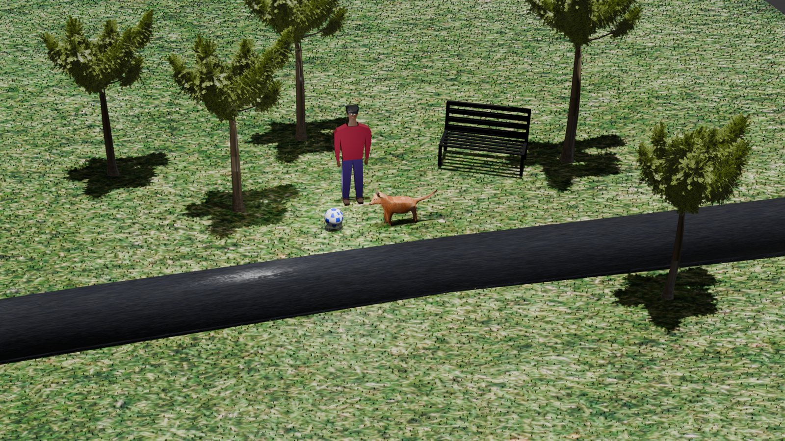

Objet 01
PERSONNAGE, ANIMAL & PAYSAGE
BlenderCet exercice consistait à modéliser une scène complète sur Blender, en réunissant trois exercices dans un seul décor : un personnage, un animal et le paysage qui les entoure.
J'ai composé un parc traversé par une route, avec un personnage debout près de son ballon, un chien, un banc et des arbres plantés dans une étendue d'herbe. J'ai ensuite travaillé l'éclairage, les matériaux et le placement de la caméra, puis effectué le rendu sous deux angles : un plan rapproché au niveau du sol et une vue plus haute qui dégage l'ensemble du décor.

